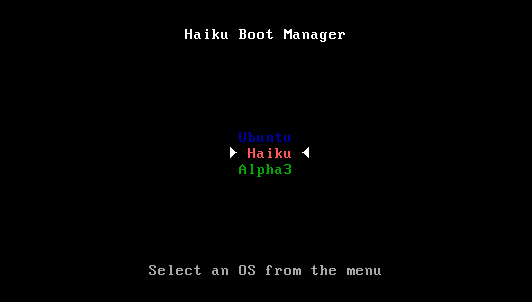

Português (Brazil)
Português (Brazil) Català
Català Deutsch
Deutsch English
English Español
Español Français
Français Italiano
Italiano Magyar
Magyar Polski
Polski Português
Português Română
Română Slovenčina
Slovenčina Suomi
Suomi Svenska
Svenska 中文 ［中文］
中文 ［中文］ Русский
Русский Українська
Українська 日本語
日本語 Gerenciador de Inicialização
Gerenciador de Inicialização
| Deskbar: | nenhuma entrada, normalmente inicia a partir do menu do Instalador | |
| Localização: | /boot/system/apps/BootManager | |
| Definições: | nenhum Cópias de segurança do MBR são salvos por padrão em ~/config/settings/bootman/ |
Se não adicionou a partição do Haiku a um gerenciador de inicialização pré-existente como o GRUB, o Gerenciador de Inicialização pode instalar um pequeno menu de inicialização na Master Boot Record (MBR) que mostra algo como isto:
O Gerenciador de Inicialização o guia através do processo de instalação do menu de inicialização.
 Escolhendo o disco de destino
Escolhendo o disco de destino

O Gerenciador de Inicialização começa com uma lista de todos os dispositivos de armazenamento disponíveis dos quais pode-se escolher o destino. Se já existe um menu de inicialização naquele dispositivo, o botão torna-se ativo, conduzindo-o através de um procedimento simples para restaurar um antigo MBR salvo, assim removendo o menu de inicialização novamente.
Caso contrário, escolha para continuar.
Criando uma cópia de segurança da Master Boot Record (MBR)
No caso de alguma coisa dar errado ou desejar remover o menu de inicialização novamente, a Master Boot Record (MBR) é agora salva. Este é obviamente um passo muito importante, assegure-se de não sobrescrever acidentalmente alguma outra cópia de segurança da MBR talvez de alguma experiência recente, por exemplo!


Apenas selecione um destino para o arquivo da cópia de segurança "MBR" ou deixe o caminho padrão. Após clicar em receberá uma confirmação se a cópia foi gerada com sucesso.
Configurando o menu de inicialização


A seguir é apresentada uma lista de todas as partições do dispositivo de destino. Next you're presented with a list of all partitions on the destination drive. Ao selecionar as caixas de verificação decide-se quais entradas irão aparecer no menu de inicialização; as caixas de texto permitem renomear uma entrada.
Após isso, selecione do menu pop-up qual partição será inicializada por padrão e defina um tempo limite com o botão deslizante abaixo. Aqui, "Imediatamente" irá pular o menu de inicialização inteiramente, "Nunca" irá parar no menu de inicialização. Pode-se passar por cima da definição de tempo limite segurando ALT enquanto inicializa.
Gravando o menu de inicialização


Antes do menu de inicialização ser gravado na MBR, é mostrado um resumo da sua configuração e então uma última chance de abortar a operação. Não se preocupe, uma vez que mantenha a cópia de segurança da MBR a salvo, poderá facilmente reverter as mudanças. Caso as coisas fiquem completamente estragadas, poderá sempre inicializar a partir de um CD ou pendrive USB de instalação do Haiku e recuperar a MBR com o Gerenciador de Inicialização.